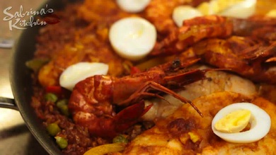

- RECIPES
- EPISODE GUIDE
MORE FROM THE SHOW
25-MINUTE CHEAT PAELLA
Here's how to make the dish
- In paellera, saute in olive oil onions,garlic and chorizo. Then add all the super spices, tomato sauce and paste.
- Add all the left over ingredients. (if you are cooking from scratch then cook raw ingredients meats and seafood first. Cover)
- After 15 minutes, add the other cooked left overs to incorporate flavors into sauce. Remove from paellera Set aside.
- In same paellera add rice, beer and lemon juice. Stir then season. On top of rice, layer all cooked ingredients spreading them evenly all around.
- Sprinkle peas, bell peppers. Top of with chopped hard boiled eggs. Cover in medium heat and let cook turning paellera clockwise every 5 minutes. After about 25 minutes the smells of those super spices combined with the beer and other left over ingredients will be divine! Serve immediately while piping hot!
From my kitchen to yours with love, Mwahhh! -S
Ingredients:
- Leftover Adobo/Afritada/Porkchops (cut in cubes)
- Leftover fish fillet
- Left over squid (chopped in rings)
- Left over prawns or shrimp
- 2 cups green peas
- half a cup garlic
- half a cup onions
- 2 teaspoon cumin
- 2 teaspoon paprika
- 2 teaspoon turmeric
- 2 cups tomato sauce
- 3 to 4 tablespoon tomato paste
- 1 bottle beer
- a fourth cup olive oil
- 1 cup sliced green red and yellow bell peppers
- 3 pieces chorizo bilbao (chopped)
- a fourth cup lemon
- 7 to 10 cups cooked rice (brown rice preffered but any will do)